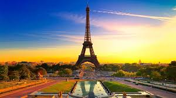

Дата народження: 01.02.2006. Місце народження: Одеса
Освіта:
Школа №13
Навчаюсь у КПІ, ФІОТ
Париж - це неймовірне місто, чесно. Воно виглядає так, ніби кожен будинок зроблений спеціально, щоб ти його фоткав. Ейфелева вежа - величезна, блищить уночі, навколо купа людей, але атмосфера така, що навіть не дратує. Стоїш і думаєш: «Ого, я реально тут побував»
